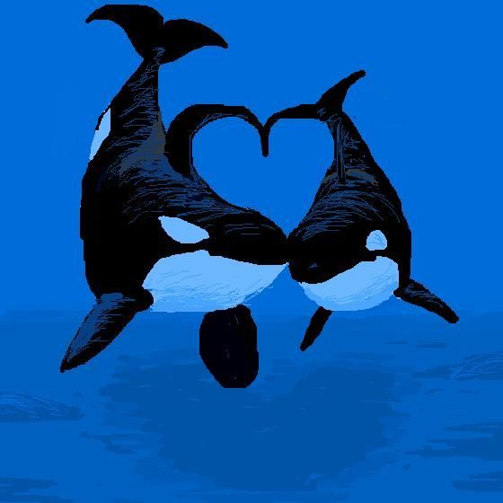

SECRET LIVES OF ORCAS
"FRIENDING" OTHER DOLPHINS.
"LIKING" FUN ACTIVITIES.
"CHATTING." ORCAS MIGHT
HAVE THE BEST
SOCIAL NETWORK EVER.

A bottlenose dolphin flips its tail as it swims with its dolphin friends.
A baby chimpanzee watches closely as its mom shows it how to crack a nut.
A male wolf howls to gather the pack for a hunt.
Playing, teaching, and working together are known as "social skills".
Humans, of course are social animals.
So are bottlenose dolphins, chimps, and wolves.
And according to scientists, it's time to move one animal higher up the list: ORCAS!
You'd need more than 650 cans of tuna to keep an orca full!
ORCAS "ADOPT" ORPHANS.
Springer watched curiously as a boat approached her.
The young orca had been orphaned as a calf, so no one had taught her that boat propellers can injure her.
Wanting to take a closer look, Springer swam closer until ....whoosh!
An older female orca called Nodales forcefully shoved her away from danger.
"Nodales took Springer under her wing, even though they weren't related",
says Paul Spong, co-director of OrcaLab, a research station in Canada.
"It didn't take long for the young orca to understand she should keep away from boats."
Today Springer is a mother herself-and she stays out of water traffic.
An orca's diet consists of whales, sea lions, penguins, seals, walruses, and a variety of fish and squid. Chomp!
ORCAS "BABYSIT" OTHER ORCAS.
One day a female named Sharky moved close to a group of newborn orcas and their mothers.
Sharky swam near a calf, then led it away to play with her-giving the moms a break.
Waite observed Sharky behave like that with other calves as well.
"She's not the only young female we've seen 'babysit' other orcas," Waite says.
We think they do it as a practice for when they have calves of their own."
Orcas don't often dive very deep-their food is usually near the surface, so they are as well.
😀 😀 😀